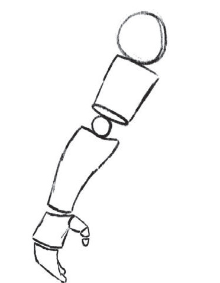
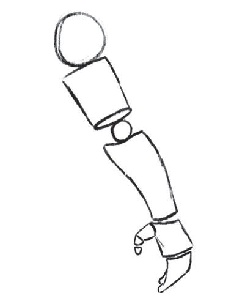

Kielelezo namba 7: Matumizi ya maumbo ya mche duara katika kuchora mikono
Uchoraji wa kifua cha binadamu
Uchoraji wa umbo la kifua cha binadamu huzingatia hatua kadhaa: kwanza, chora ramani ya umbo la kifua kwa kuchora umbo la mraba. Kisha chora maumbo ya mche duara kushoto na kulia mwa umbo hilo kutengeneza maumbo ya sehemu za mikono upande wa mabega. Baada ya hapo, unganisha pembe za mraba na yale maumbo ya mche duara kwa kutumia penseli kukamilisha umbo la kifua. Kielelezo namba 8 kinaonesha mwongozo wa kutumia mraba na mche duara katika kuchora kifua cha binadamu.